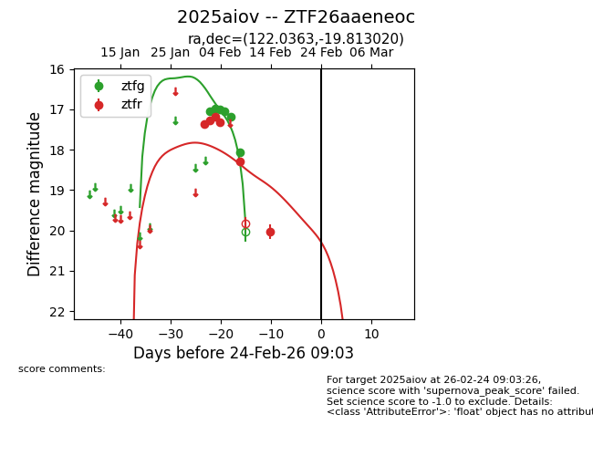
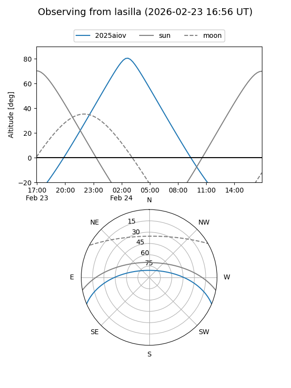
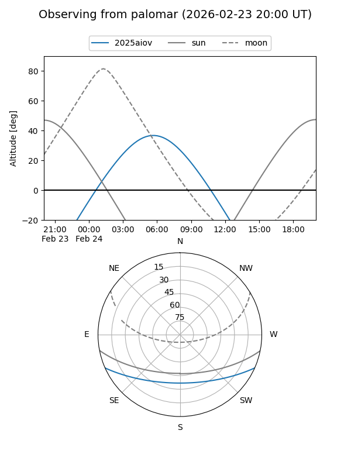
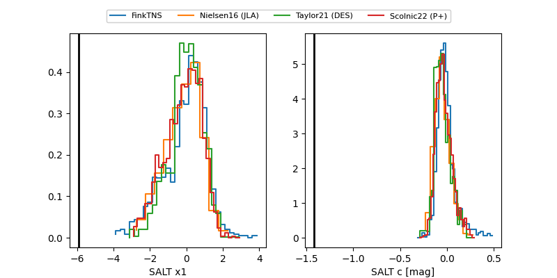

2025aiov
Target 2025aiov at 2026-02-24 09:08
Aliases and brokers:
FINK: link
Lasair: link
ALeRCE: link
TNS: link
YSE: link
alt names
ZTF26aaeneoc (ztf,fink_ztf)
2025aiov (tns,yse)
Coordinates:
equatorial (ra, dec) = 122.0363,-19.81302
equatorial (HMS+DMS) = 08:08:08.71,-19:48:46.87
galactic (l, b) = (239.4082,+6.92008)
Flags:
Photometry:
last ztfg=18.06, ztfr=20.03
6 ztfg, 6 ztfr detections
Lightcurve

Visibility


Additional plots
